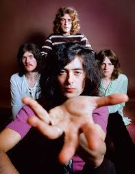

Hard rock and heavy metal as we know it wouldn't exist without Led Zeppelin, one of the most popular and innovative rock bands ever.
The band's blues explosions frequently gave way to heavy folk, mystical psychedelic rock and orchestral detours–a testament to the U.K. group's versatility and willingness to push sonic boundaries.
When the Yardbirds split in 1968, lead guitarist Jimmy Page wasted no time putting together a new band. The reasons were partly pragmatic: the now-dissolved group still had some tour dates left on the docket in Denmark and Sweden, so Page's new project would fulfill those obligations.
But mostly, Page wanted to form a band which emphasized guitars, yet still boasted impeccable overall musicianship. Page first found two kindred spirits in vocalist Robert Plant and drummer John "Bonzo" Bonham, who had been bandmates in an English group called Band of Joy. Bassist John Paul Jones, who knew Page from their shared days in the session musician world, completed the lineup.
In September 1968, this new group did the Scandinavian tour billed as the New Yardbirds. However, things quickly started moving in an original direction: upon returning to England, the quartet adopted the name Led Zeppelin and almost immediately went into the studio to record their debut album.
1969's Led Zeppelin certainly owes a debt to the bluesy sound of the Yardbirds; in fact, Page has said he had leftover riffs laying around from his time in that band. However, the LP already shows signs of Led Zeppelin's singularity, between Bonham's bustling drumming on "Good Times Bad Times" and the mystical, acoustic-electric foundation of "Babe, I'm Gonna Leave You."
The band hit the road after the LP's release, and spent the spring and summer touring North America, the U.K. and Europe. From those treks spawned Led Zeppelin II (1969), an LP highlighted by the hard rock seduction "Whole Lotta Love," dirge-like smolder "What Is And What Should Never Be" and the lighter psychedelic sprawl "Thank You."
As this album underscored, Led Zeppelin's blues-based approach to rock & roll was a study in contrasts. Page's acoustic-based folk detours were just as heavy as his Godzilla-sized electric riffs, thanks to Bonham and Jones' searing rhythm section rumbles. The former was also one of the most gifted, versatile drummers of all time: not only was he capable of jaw-dropping power and velocity, but he also deftly incorporated evocative percussion elements which added texture and shading.
Plant, meanwhile, was a raw, unfettered and magnetic vocalist who nevertheless knew when to hold back and tone down his voice to increase tension, drama or sex appeal. Led Zeppelin provided the blueprint for heavy metal, but also pioneered the trend of rock bands embracing stripped-down arrangements and writing power ballads.
As the 1970s dawned, Led Zeppelin continued pushing their sound forward. Led Zeppelin III (1970) incorporated a zoned-out Moog synthesizer, pedal steel and Jones' first string arrangements—the latter something that would later become a hallmark of (and further distinguish) the band's sound.
1971's Led Zeppelin IV, meanwhile, contained some of Led Zeppelin's most enduring songs. The plaintive "The Battle of Evermore" and "Going To California"—both songs featuring prominent mandolin—and the epic "Stairway To Heaven" exhibited a sparser vibe, while "Black Dog" and "Rock and Roll" hewed toward the band's snarling, electric side.
1973's Houses Of The Holy is just as classic, courtesy of the psychedelic-tinged "Over The Hills And Far Away" and corkscrew-riffed "Dancing Days," while 1975's loose-limbed double LP Physical Graffiti revolves around the orchestra-aided thunder of "Kashmir."
Throughout these commercial heights, Led Zeppelin still maintained grueling touring commitments. However, this hard work paid off: The band were playing in front of massive audiences both in the U.S. and the U.K., and had sold millions of records. At the same time, the band's offstage antics—from drug use and hedonism to violence and other miscellaneous debauched indulgences—were just as legendary. Led Zeppelin were capital-R rock stars who exuded cool mixed with twinges of danger.
Unfortunately, the band's highs didn't last. In August 1975, Plant and his wife, Maureen, were injured in a serious car accident; in 1977, Plant's five-year-old son, Karac, died of a respiratory infection. All told, after 1975, Led Zeppelin only toured three times. (1976's The Song Remains The Same live album and concert film somewhat soothed those looking for a Led Zeppelin live fix.)
1979's In Through The Out Door brought the minor hit "Fool In The Rain," whose Latin-reminiscent percussive elements represented yet another progression for the band. However, Led Zeppelin's career was tragically cut short in 1980: while the band was rehearsing for a U.S. tour, Bonham accidentally died after he choked on his own vomit while intoxicated.
In the aftermath of his death, Led Zeppelin split up, and eventually released a swan song, Coda, in 1982. Over the years, the surviving members of the band have worked with each other in various musical projects. Perhaps most notably, Page and Plant released two albums and toured together in the '90s.
Led Zeppelin have also reunited with a fill-in drummer for special occasions, notably at 1985's Live Aid, Led Zeppelin's 1995 Rock Hall induction and at the 2007 Ahmet Ertegun tribute concert. A full-scale reunion has been elusive, however—a testament to Bonham's irreplaceable nature and the band members' desire to keep moving forward and resist stagnancy.
Inductees: John "Bonzo" Bonham (drummer; born May 31, 1948, died September 25, 1980), John Paul Jones (bass; born January 3, 1946), Jimmy Page (guitar; born January 9, 1944), Robert Plant (vocals; born August 20, 1948)